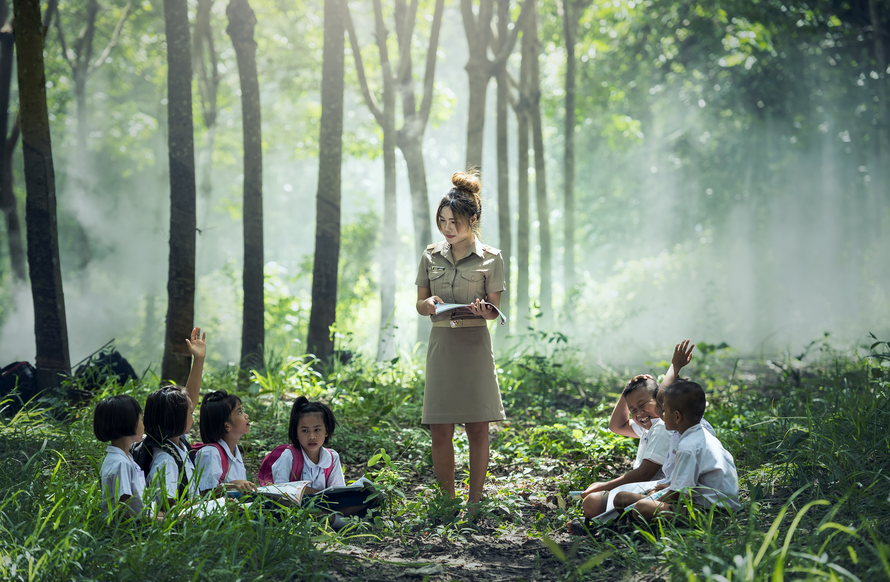

- Time: There seems to be never enough time to teach, grade, and just be a family.
- Financial and public resource loss: You are at risk of loosing after-school programs, special education resources, and even The Big One money when you decide to homeschool.
- Burnout: Yes even you as a homeschool parent will experience burnout from the stress an emotional fatigue like in any other profession.
- Socialization: Yes while it can be great to target who you deem is right for you child(ren) it can rob them of important interactions.
